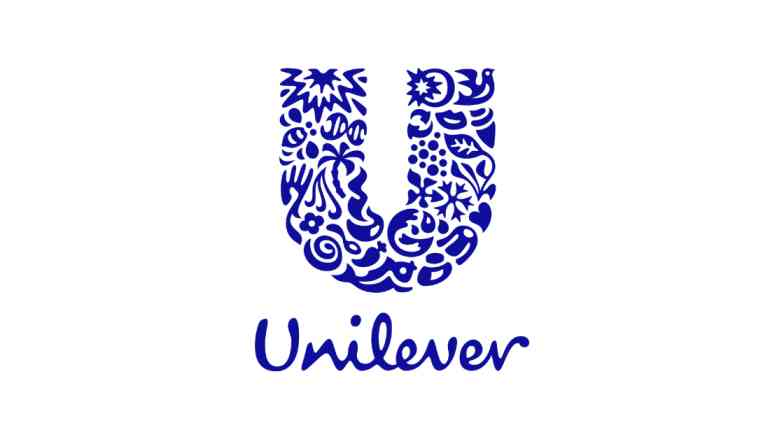

Unilever Recruitment 2022 | Strategic Sourcing Consultant
Unilever Recruitment 2022 | Strategic Sourcing Consultant | Apply Now!
Unilever has announced a job notification for the post of Strategic Sourcing Consultant. A student from various disciplines can apply for Unilever Recruitment 2022. Interested and eligible candidates can read more details below

| Unilever Recruitment 2022 | |||
|---|---|---|---|
| 1 | Company name | Unilever | |
| 2 | Post Name | Strategic Sourcing Consultant | |
| 3 | Salary | 7 - 9 LPA | |
| 4 | Experience | 0-2 yr | |
| 5 | Job Location | Bangalore | |
| 6 | Batch | 2022/21/20/19/18/17 | |
Job Description:
Unilever is hiring candidates for the post of Strategic Sourcing Consultant
Job Responsibilities:
▪︎ Develop and align own workplan, objectives, priorities, and processes within the context of the overall IT-supply management and stakeholder community priorities and processes.
▪︎ Lead global and regional strategic sourcing activities to professionalize the sourcing of materials / clusters of external spend within area of spend responsibility.
▪︎ Identify, initiate and sustain direct interactions with appropriate internal stakeholders / functional / operating teams within the business to drive “buying” behavior change required to meet business project objectives and facilitate implementation of the approved sourcing strategies.
▪︎ Conduct data gathering and analysis of internal needs. Develop and follow supply market knowledge and insight (e.g. suppliers, price trends, cost drivers, acquisitions & disposals etc.).
▪︎ Develop appropriate sourcing strategies for cluster of spend within area of responsibility.
▪︎ Execute the sourcing strategy, including tendering, analysis, selection of and negotiation with suppliers, including crafting and placing of legal agreements / contracts and confidentiality agreements and ensure that all are conducted in accordance with Unilever’s code of business ethics and corporate social responsibility requirements.
▪︎ Ensure that supply agreements, commercial terms & conditions, specification information and pricing information including changes is communicated accurately and in a timely fashion to appropriate operational teams/individuals.
▪︎ Enable and facilitate the implementation of the approved sourcing strategies with appropriate functional and operational teams within the business.
▪︎ Responsible for ongoing supplier relationship management, monitoring, review and continuous improvement as well as leading supplier side of innovation/sustainability/cost savings projects.
▪︎ Identify need for and support design of business processes to facilitate use of appropriate “buying channel” (e.g. Ariba Buyer, spot buying desk etc.) within UL stakeholder community.
▪︎ Develop a deep understanding of and rigorously apply the Unilever strategic sourcing process and tools, including being fully operational and actively use e-Sourcing tools e.g. use of e-RFIs, e-RFPs, cost modeling and others.
▪︎ Respond proactively to information demands and questions from supply management operational teams and other internal parties as needed.
▪︎ Provide input, influence and linkage to business transaction tools (as appropriate) e.g. SAP BW, Ariba Buyer.
▪︎ Have input to the of a Supply Management Team workplan for area of responsibility, to deliver the required objectives and within this context develop own strategic sourcing team priorities.
▪︎ Participate in or lead Regional/Global Teams (as appropriate) for area of responsibility.
Eligibility Criteria:
▪︎ Bachelor’s degree from any stream.
Preferred skill:
▪︎ Team player and quick learner
▪︎ Good Communication- Verbal and Non Verbal skills
▪︎ Multi-Tasking
▪︎ Good Team Player
About Unilever
Every day, nine out of ten Indian households use our products to feel good, look good and get more out of life – giving us a unique opportunity to build a brighter future. We promote innovation, big and small, to make our business win and grow; and we believe in business as a force for good. We believe that every individual irrespective of their race, colour, religion, gender, sexual orientation, gender identity or expression, age, nationality, caste, disability or marital status can bring their purpose to life.
How to Apply for Unilever Recruitment 2022?
▪︎ Interested and Eligible candidates can apply for this drive online by scrolling down and clicking on Apply HERE.